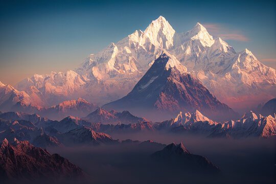
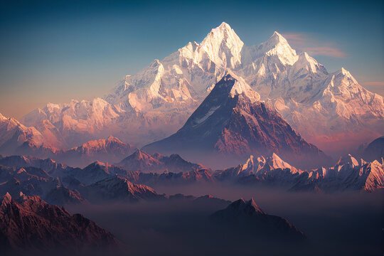
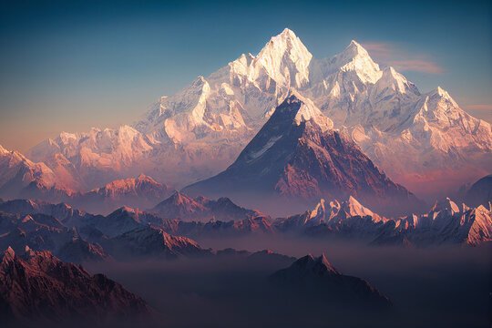

Image Gallery
 

The Roof of the World
The Himalayas, meaning "Abode of Snow" in Sanskrit, is the highest mountain range in the world. Stretching across five countries—India, Nepal, Bhutan, China, and Pakistan—it is home to some of the tallest peaks, including Mount Everest. The range spans over 2,400 kilometers and has shaped the culture, religion, and environment of the regions it touches.
The Himalayas were formed around 50 million years ago due to the collision of the Indian and Eurasian tectonic plates. The range consists of three parallel zones:
The Himalayas play a vital role in shaping the climate and ecology of South Asia:
Mount Everest, at 8,848.86 meters, is the tallest peak in the world, located in the Greater Himalayas.
The Siachen Glacier, one of the largest in the world, is located in the Karakoram range, part of the Himalayan system.
The Himalayas are considered sacred in Hinduism and Buddhism, with pilgrimage sites like Kedarnath and Lhasa.
The Himalayan range includes UNESCO World Heritage Sites like the Nanda Devi and Valley of Flowers National Parks.
The Himalayas offer unparalleled opportunities for adventure and exploration:
